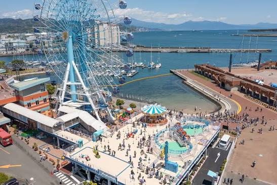
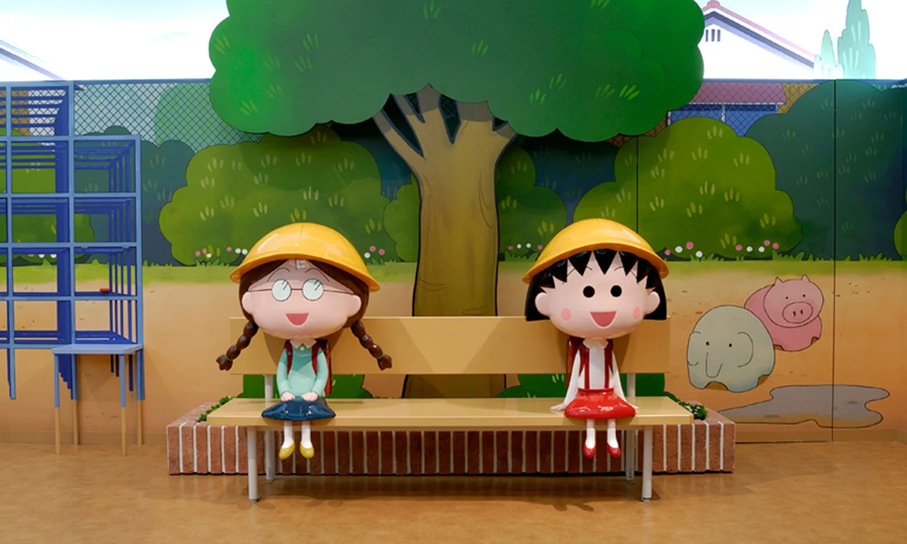
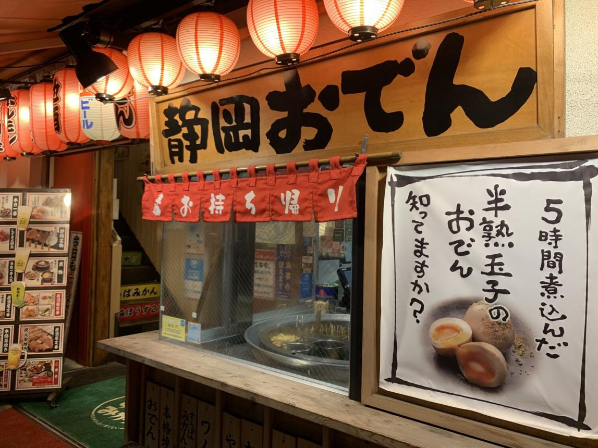
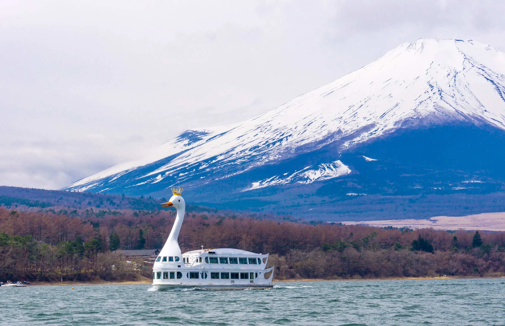

滞在 11:20 - 12:40
滞在 11:20 - 12:40
スポット 01 ｜ 昼食 ＆ 複合施設
清水エスパルスドリームプラザ
しみず えすぱるす どりーむ ぷらざ
現地フォトギャラリー（4景観）

大観覧車
ちびまる子ちゃんランド
静岡おでん
富士山と遊覧船 地理（ちり）
三保半島が外海の荒波を遮る天然の防波堤となり、年間を通じて波が穏やかな天然の良港「清水港」の沿岸に位置します。
歴史（れきし）
1899年の開港以来、日本一のお茶輸出港として世界へ展開。1999年に開港100周年記念の再開発事業として誕生しました。
文化（ぶんか）
清水すし横丁や静岡おでんなどの海の幸食文化と、清水出身のさくらももこ先生による『ちびまる子ちゃん』の昭和日常文化を発信。
エピソード
名称の「エスパルス」はShizuoka、Shimizu、Soccer、Supporterの「S」と、人々の熱い鼓動（Pulse）に由来しています。